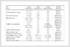

2. 华中科技大学 计算机科学与技术学院, 武汉 430074
2. School of Computer Science and Technology, Huazhong University of Science and Technology, Wuhan Hebei 430074, China
可满足性问题(SATisfiability problem, SAT)是计算机科学领域经典的NP问题(Non-deterministic Polynomial Complete problem, NPC)，在计算机科学理论中占有非常重要的地位。现实世界的问题大多数都是NP问题，即不确定性问题。比如，超大规模集成电路测试、资源配置、网络的搜索、数据挖掘、城市交通等，解决这些工业问题的SAT技术推动了人工智能的重要发展。
目前，绝大多数SAT完备算法是基于深度遍历二叉树的DPLL(Davis Putnam Logemann Loveland)[1]算法。2001年Moskewicz等[2]提出的冲突驱动子句学习(Conflict Driven Clause Learning, CDCL)，使得SAT求解效率有了标志性的进步，在合理时间内，求解规模从数百个变元，扩大到数万个变元。后续提出的SAT完备算法的主要方法和改进[3-4]均基于冲突驱动子句学习技术。比如，非时间序列回溯(Non-chronological Backtracking, NCB)[5]，该策略分析冲突的产生原因，记录优化的学习子句，并在回溯后，优先满足学习子句，以避免再次陷入相同冲突。文字块距离(Literal Block Distance, LBD)[6]是统计学习子句中不同分支层的变元数，是一个动态变化值。子句库始终保留二元学习子句或LBD值小的学习子句。该策略既避免了因学习子句剧增而内存崩溃的危险，又保留了质量高的变元约束条件，是有效的子句删除策略。
变元独立衰减(Variables State Independent Decaying Sum, VSIDS)[7]分支策略强化了冲突学习对搜索的影响。一旦变元在产生学习子句的过程中出现，那么该变元的活跃度将非线性增加。近几年的SAT竞赛数据显示变元独立衰减策略或者其变种是较为高效的分支策略。动态重启(Dynamic Restart, DR)[8]是当算法较长时间不能找到冲突时，程序撤销之前的搜索动作，重新开始遍历二叉树。因为新搜索是在含有学习子句的子句库中进行，学习子句代表了之前的搜索信息，所以重启并不是推翻之前的搜索。目前，工业算例的规模可达百万个变元数，千万个子句数。因为问题的复杂度高，量化这些策略在搜索过程中的作用，以及它们之间的相互影响，是非常困难的事情。
本文针对在搜索空间为2n(n是变元数)的二叉树中，由于学习子句数量有限，或学习子句相似度高而导致搜索树层次过深、计算效率低的问题，提出了双阶段评分的新分支策略。即对于搜索阶段传播的变元，若其对构造冲突作用小，则给予适当的惩罚；对于学习阶段中构建冲突的变元给予奖励，通过较为全面地评估变元对搜索的影响，以达到更快地发现冲突，提高剪枝率的目标。计算了SAT国际竞赛的工业组算例，实验结果表明新变元选择策略可有效地调整搜索树的高度，缩短运算时间。
1 可满足性问题的求解文献[9]给出了可满足性问题的相关术语的定义。
1.1 相关术语定义1 布尔变元集合。符号V表示命题变元集合，V={x1, x2, …, xn-1, xn}，xi∈{true, false}。文字li是布尔变元xi及其否定形式xi。一般称xi为正文字，xi为负文字。变元xi取true使得正文字满足, 取false使得负文字满足。
定义2 子句集。子句是V上若干文字的析取，记为c。子句集是由若干子句构成的集合，记为C。子句长度是子句所含文字的个数，记为|c|。特别地，长度为1的子句称为单子句。长度为0的子句称为空子句，记为δ。
定义3 子句满足。若子句满足当且仅当子句中至少有1个文字为true。因不含有任何文字，所以空子句永远不满足。若子句不满足当且仅当子句中所有文字均为false，该子句又称为冲突子句，记为□。
定义4 合取范式。合取范式(Conjunctive Normal Formula, CNF)是由若干V上的子句合取构成的命题公式，记为F。
定义5 真值指派。真值指派是命题变元V′→{1, 0}的映射，V′⊆V，记为A。当V′=V时，A是完整真值指派；否则，称之为部分真值指派。
定义6 冲突集。对任意一组V上的真值指派，若子句集C中至少含有1个不满足子句，则称C为冲突集，记为Φ。若两个冲突集的交为空，则称它们是相互独立的。
定义7 SAT问题。对于命题变元集合V和子句集C，判定是否存在一组关于V的真值指派使得C中所有子句满足。
1.2 SAT问题的完备算法目前，DPLL是绝大多数SAT完备算法的主流程的控制程序。算法从根节点开始深度遍历二叉树，当遇到冲突的真值指派时，算法回溯。若算法找到一组真值指派，使得每个子句满足，那么程序终止，返回“可满足”。若遍历完完整的二叉树后，未找到一组真值指派使得所有子句满足，那么程序终止，返回“不可满足”。DPLL算法详见文献[1]。
1) 测试冲突的单子句传播。
单子句传播(Unit Propagation)[9-10]可以帮助SAT算法推导出真值指派的冲突，减少搜索空间。算法1是单子句传播的具体过程。
算法1 UnitPropagate(F)。
输入 合取范式F；
输出 若有冲突，返回冲突子句，否则返回NoConflict。
1) F′← F
2) do {
3) 取UnitQue中单子句cj，满足cj的文字l；
4) 形如l∨li…∨lk的子句已满足，从F′中移除；
5) 形如l∨lm∨ls…∨lt的子句cn，化简为lm∨ls…∨lt；
6) if (lm∨ls…∨lt为单子句)
7) lm∨ls…∨lt入UnitQue队列；
8) else if (lm∨ls…∨lt为空子句)
9) return cn；
10) }while(UnitQue不为空)
11) return NoConflict
单子句传播满足单子句中的文字，不断地简化其他子句，直至单子句队列UnitQue为空，或冲突子句出现为止。例1说明了单子句传播推理冲突子句的过程。因为xi∨xj等价于xi→xj，所以建立F的蕴含图更直观地体现推理过程。如图 1所示，x1是当前第9层的分支文字，x17、x15、x23、x2分别是第2、5、4、2层的已满足的文字。当x17=1、x1=1时，子句x17∨x1∨x6简化为单子句x6，所以x6的决策层亦是9。同理，未标识括号的变元的决策层均是第9层。□表示冲突子句x5∨x9。
| 图 1 F的逻辑蕴含图 Figure 1 Logical implication graph of F |
例1 F={x5∨x9, x17∨x1∨x6, x1∨x7, x1∨x4, x6∨x7∨x4∨x3, x3∨x15∨x11, x11∨x5∨x2, x9∨x11∨x23, x17∨x2, …}
2) 学习子句的产生。
当搜索到冲突后，SAT算法进入分析冲突的原因，产生学习子句的学习阶段。图 2显示了由冲突子句出发，通过消解规则，逐一产生学习子句的过程。消解规则是若两个子句中包含有相反文字，则将这对文字删除，剩余文字通过析取构成新的子句。消解规则不改变合取范式的满足性。
| 图 2 学习子句的产生过程 Figure 2 Generation process of learning clauses |
同一个冲突可以学习到多个新子句，如x5∨x11∨x23和x11∨x23∨x2均是学习子句。经实验验证，第一蕴含点(First Unit Implication Point, FUIP)[5]的学习方式是更加有效的。具体操作是利用消解规则，按照变元传播的倒序，逐一消解子句中互为相反的变元。记录每个新子句中当前层次的文字数。当该值为1时，学习过程结束。如F的第一蕴含点的学习子句L是x11∨x23∨x2，ΦL={x5∨x9, x9∨x11∨x23, x11∨x5∨x2}是L对应的冲突集。易验证，当学习子句不满足时，在任意真值指派下，冲突集中至少有1个子句是不满足的。利用此性质，在后续搜索中，一旦学习子句不满足，即可剪枝。目前，绝大多数SAT完备算法依据FUIP学习到的子句确定回溯层次。非时间序列回溯是指搜索回溯到学习子句中非当前层次文字的最大层次。如图 2产生的学习子句x11∨x23∨x2，上层文字集合是{x23，x2}，其最大的层次是4。SAT算法回溯后，将撤销第5层到第9层的搜索工作。
2 基于动态奖惩分支策略的SAT算法DPLL+子句学习是SAT完备算法的基础。为了减少搜索树的节点数，提高算法的效率，分支策略将选择对搜索树规模影响大的变元。
2.1 基于学习过程的变元策略如变元独立衰减策略或其变种，这类基于学习过程的分支策略是在产生学习子句的学习阶段，对参与消解操作的所有子句包含的变元，增大其活跃度。算法始终选择当前活跃度最大的变元作为新的分支点。如例1会增加变元x5、x9、x11、x23、x2、x15的活跃度。变元参与构造冲突越多，其活跃度越大。在后续搜索中选择活跃度大的变元，易找到之前发现过的冲突，有利于减少搜索路径。
我们发现仅基于学习过程的分支策略对减小搜索树规模并不总是有效的。某些情况下，相似的学习过程导致学习子句相似度高。学习子句代表的搜索的历史信息比较集中，回溯后或重启后，基于学习过程的变元策略会仅有少量变元可以优先选择。搜索没有足够的历史信息指引方向，会随机去选择变元作为新的分支节点，这会导致搜索树层次过深，算法陷入困境。目前，绝大多数SAT求解器采用动态重启逃脱这种困境。因为子句库保存了表述冲突关系的学习子句，所以重启后的搜索与没有学习信息的原始搜索不同。通过优先选择冲突关系多的变元，新搜索可能会找到冲突。但是动态重启只能缓和算法遇到的问题，并未改变变元的活跃度，程序可能会又陷入到某一子树的过度搜索中。
2.2 基于学习与搜索双阶段的分支策略为了减少搜索树规模，使搜索树更加平衡，全面地评估变元对搜索的作用，使得越容易构造冲突的变元，越接近树根，增大搜索优先找到冲突的概率是基于动态奖惩分支策略的奖惩算法——AP7(Award and Punishment 7)的主要改进思路。
SAT完备算法包括2个主要过程：一是搜索过程，即单子句传播，发现冲突的操作；二是学习过程，即产生学习子句，增加冲突变元的活跃度，确定回溯层次。AP7算法对以上两个过程中的变元进行全面的评估。在搜索阶段，降低较长时间内未找到冲突的变元的活跃度，在学习阶段，提高对构造冲突有益的变元的活跃度，并优先选择当前活跃度最大的变元作为分支变元。算法流程如图 3所示。
| 图 3 AP7算法流程 Figure 3 AP7 algorithm flowchart |
算法2是AP7的伪代码。算法中penalty是让变元活跃度随着传播而衰减的独立参数；numCC是冲突数，初始值为0；penaltyV是存储待惩罚变元的数组；dl是搜索树的层数；lastC[x]是存放变元x的最近一次出现的冲突；Act是记录变元x活跃度的数组；ΦL是学习子句L对应的冲突集，Variable(ΦL )是冲突集中出现的所有变元的集合；V是输入算例的变元集合；BranchV是分支变元；max函数返回活跃度最大的变元；bl是SAT算法产生冲突后的回溯层次；AP7采用非时间序列回溯的方法；cancel函数是算法回溯到指定的层次。
算法2 AP7(F)。
输入 合取范式F；
输出 F是否满足，满足返回“SAT”，不满足返回“UNSAT”。
1) penalty=0.6;numCC =0;penaltyV.clear();
2) for(;;)
3) UnitPropagate(F)且将传播的变元x压入penaltyV中；
4) for xt∈penaltyV do //搜索阶段的惩罚
5) if UnitPropagate(F) = =冲突then
6) if penalty < 0.98 then
7) penalty = penalty + 10-7;
8) end if
9) Act[xt]=Act[xt]*penalty+(1-penalty)/(numCC-lastC[xt]);
10) else
11) Act[xt]=Act[xt]* penalty;
12) end if
13) end for //结束惩罚计算
14) penaltyV.clear();
15) if UnitPropagate(F) = =冲突then //找到冲突
16) if dl = = 0 then
17) return "UNSAT";
18) end if
19) numCC ++;
20) FUIP方式产生学习子句L, 并返回回溯层次bl；
21) for xi∈Variable(ΦL) do //学习阶段的奖励
22) lastC[xi]=numCC;
23) Act[xi]=; Act[xi]+(1/0.9)numCC
24) if; Act[xi] >1E100 then
25) for xi∈V do
26) Act[xi]*=1E-100; //作平滑
27) end for
28) end if
29) end for //学习阶段奖励结束
30) cancel(bl);
31) 翻转学习子句L中未满足的文字；
32) else //未找到冲突
33) BranchV=max(; Act[xk]); xk∈V
34) if所有变元都有了真值指派then
35) return "SAT";
36) end if
37) dl ++;
38) BranchV压入penaltyV;
39) end if
40) end for
AP7首先作单子句传播，将单子句传播中所有变元压入penaltyV中，如果这些变元的真值指派之间没有冲突，那么将它们的活跃度降低至60%~98%；如果这些变元之间有冲突那么除了适当的给予惩罚之外，还给予少量的奖励。以上是传播阶段变元的活跃度计算。
如果单子句传播发现了冲突，且当前搜索层次是第0层，那么SAT问题无解，返回“UNSAT”；如果当前层次不是第0层，则AP7对冲突进行分析，采用FUIP方式产生学习子句，确定回溯层次bl。在学习子句对应的冲突集中出现的变元，其活跃度会得到大小为(1/0.9)numCC的奖励。AP7对构造冲突的变元进行奖励后，开始回溯，撤销第bl+1层到当前层传播的变元。因为回溯后的学习子句是单子句，所以满足学习子句，进入到新的一轮单子句传播。
如果单子句传播未发现冲突，则AP7选择活跃度最大且未赋值的变元作为分支变元。分支层次增加1，分支变元压入penaltyV中。AP7开始新的一轮单子句传播。如果所有变元具有合理的真值指派，没有未赋值的变元，那么AP7找到了问题的解，算法返回“SAT”。
学习阶段对变元的奖励值不是固定值，该值随着搜索层次的加深，奖励值越大。为了防止活跃度值的溢出，当某个变元的活跃度大于阈值1E100时，变元的活跃度整体地平滑下降。搜索阶段实施惩罚时需注意以下几个问题：1)降低活跃度的penalty不是一个固定值。算法找到越多的冲突，活跃度降低得越少。这是因为最近找到的冲突很大概率上质量会比之前的冲突要好。2)当搜索找到冲突时，增加了一个变量1/(numCC-lastC[xt])。若某个变元一段时间之后，再次找到了冲突，那么它与长时间未有冲突的变元相比，活跃度应该高一些。3)当搜索没有找到冲突时，直接大幅度降低变元的活跃度。虽然这种方式比较野蛮，但是对于复杂的问题，它是有效的。
3 新分支策略的评估 3.1 实验环境和设置为了准确评估新分支策略在求解工业问题上的作用，实验对比了新算法AP7和glucose3.0。两者仅分支策略不同，AP7采用的是基于奖惩的新策略，而glucose3.0是基于学习过程的变元独立衰减分支策略。在SAT竞赛的工业组中，glucose算法及其变种[12]有重要的地位。glucose2.3算法是2013年竞赛的工业组冠军，获得2014年—2016年工业组前三名的算法均是以glucose3.0为基础的；同时，glucose被SAT组委会用于确定算例的难度等级。
实验的机器配置采用Intel E5 2.7 GHz处理器、32 GB内存、Centos 6.3服务器版本的操作系统。在相同的机器上，AP7算法和glucose3.0算法求解2016年SAT Competition (http://www.satcompetition.org)公布的工业算例集。这些算例来自软件测试、调度、硬件电路测试、网络安全、加密算法等实际问题。根据算例的解的满足性，这些算例被分为可满足算例集和不可满足算例集。实验采用SAT竞赛的限定时间，每个算例的运算不超过5000 s，若超出，该算例结果记为unsolved。
3.2 实验结果首先给出glucose3.0和AP7算法在相同机器上计算相同算例的时间结果。glucose3.0和AP7算法计算加密安全哈希算法(Secure Hash Algorithm, SHA)、矩形装配、交通规划等工业问题的运算时间如表 1所示。表 1中算例的变元数是13408~521147，子句数是308391~13378009。表 1显示，在27个算例中AP7算法有22个算例运行时间少于glucose3.0，AP7算法相比glucose3.0计算可满足算例的运行总时间缩短了31.66%。
|  | 表 1 不同算法可满足算例的运行时间对比 s Table 1 Running time comparison of SAT examples for different algorithms s |
glucose3.0和AP7算法计算硬件电路优化、电子控制等工业问题的运算时间对比如表 2所示。表 2中算例的变元数是3295~89315，子句数是13079~5584002。glucose3.0在5000 s限定时间内，未求解出表 2的第1个算例smtlib-qfbv-aigs-ext_con_032_008_0256-tseitin，该算例在竞赛网站公布的最好成绩是Lingeling(druplig)算法的1.432 s。根据表 2中AP7和glcuose3.0均计算出结果的21个算例，有17个算例AP7算法运算时间少于glucose3.0，AP7算法的运行总时间比glucose3.0缩短了37.13%。
| 表 2 不同算法不可满足算例的运行时间对比 s Table 2 Running time comparison of UNSAT examples for different algorithms s |
分支数是SAT完备算法效率的核心参数。当搜索树分支减少，搜索空间减小，SAT完备算法的运算时间才会降低。
glucose3.0和AP7计算的部分算例的分支数以及降低比如表 3所示。降低比=(glucose3.0分支数-AP7分支数)/(glucose3.0分支数)。
| 表 3 不同算法算例的分支数对比 Table 3 Branch number comparison for different algorithms and examples |
从表 3可以看出，除1个算例外，改进后的AP7相比glucose3.0可降低分支数为14.2%~56.5%。通过表 3实验数据可知基于奖惩的分支策略相比仅增加变元活跃度的分支策略可以有效地减小搜索树规模。
为了进一步观察动态奖惩策略对搜索冲突的影响，每增长1万个冲突时，算法输出重启的次数。图 4~5对比了两个算法计算相同算例时，相同冲突数下所需的重启次数。glucose3.0计算002-80-12.cnf重启了103921次，找到13841064次冲突；AP7则重启了67927次，找到10633140次冲突。图 4显示在0~10633140次冲突时，两个算法相应的重启次数。AP7和glucose3.0采用相同的重启策略。在0~105万次冲突搜索中，glucose3.0比AP7重启次数少；在105万~1384万次冲突中，AP7重启次数少于glucose3.0。实验结果表明AP7算法综合地评定变元在搜索中的作用，可有效地减少较长时间找不到冲突的情况，从而减少了重启次数。
| 图 4 可满足002-80-12.cnf的重启次数和冲突数的对比 Figure 4 Comparison of conflicts and restarts of SAT 002-80-12.cnf |
| 图 5 不可满足6s168-opt.cnf的冲突数和重启数的对比 Figure 5 Comparison of conflicts and restarts of UNSAT 6s168-opt.cnf |
glucose3.0计算不可满足算例6s168-opt.cnf的冲突数是2063558，重启次数是4758；AP7计算该算例的冲突数是1084645，重启次数是2059。图 5显示了6s168-opt.cnf在0~120万次冲突范围内两个算法的重启次数的对比。从图 5可以看出，产生相同个数的冲突时，AP7的重启次数远低于glucose3.0算法的重启次数。因此，基于奖惩的分支策略AP7对于不可满足的工业问题，也可以有效地减少搜索树层次，从而减少重启次数。
从学习子句质量进一步分析新分支策略的作用。SAT完备算法每次找到1个冲突，产生1个学习子句。每个学习子句会计算其相应的LBD值，LBD值为2的学习子句是指产生冲突的原因子句分布在搜索树的2个层次。因为LBD值为2的学习子句描述了关系更为紧密的冲突变元之间的关系，所以质量高的这类学习子句一直保留在子句库中，不会被删除。表 4列出了glucose3.0和AP7算法正确求解的算例的重启次数，LBD_2学习子句数以及LBD_2学习子句数与重启次数的比例。若LBD_2学习子句数与重启次数的比例越大，说明重启后被选择的搜索变元关系更加紧密，导致找到冲突后学习子句的LBD值下降。表 4显示在重启次数较小时(重启次数 < 150)glucose3.0算法重启的平均学习质量较高，但是求解复杂的问题(重启次数>150)AP7算法的平均学习质量较高。这表明综合评定变元可以产生更多高质量学习子句。
| 表 4 不同算例的重启次数、LBD_2子句数的对比 Table 4 Comparison of number of restarts and LBD_2 clauses for different examples |
工业问题规模大，求解难度高。学习子句数量少或质量不高对搜索的指导意义有限，使搜索易陷入到层次过高，不平衡的困境中。为了缩短求解问题的时间，算法需要尽可能地选择对寻找冲突更有利的变元，以使得搜索树更加平衡。基于动态奖惩的分支策略综合地评估了变元对传播和学习两个主要过程的影响，建立惩罚函数。相比传统、单一的奖励变元评估策略，动态奖惩的分支策略通过调整更关键的变元靠近根节点，从而有效地降低重启次数，提高了学习子句质量，减小搜索树的规模。分支变元策略的改变使得搜索树更加紧凑，将会影响子句删除的标准，后续将对学习子句的删除作新的探索。
| [1] | DAVIS M, LOGEMANN G, LOVELAND D. A machine program for theorem proving[J]. Communications of the ACM, 1962, 5(7): 394-397. DOI:10.1145/368273.368557 |
| [2] | MOSKEWICZ M W, MADIGAN C F, ZHAO Y, et al. Chaff:engineering an efficient sat solver[C]//Proceedings of the 38th Annual Design Automation Conference. New York:ACM, 2001:530-535. http://ieeexplore.ieee.org/xpls/icp.jsp?arnumber=935565 |
| [3] | ANSÓTEGUI C, BONET M L, LEVY J. SAT-based MaxSAT algorithms[J]. Artificial Intelligence, 2013, 196: 77-105. DOI:10.1016/j.artint.2013.01.002 |
| [4] | KOSHIMURA M, ZHANG T, FUJITA H, et al. QMaxSAT:a partial Max-SAT solver system description[J]. Journal on Satisfiability, Boolean Modeling and Computation, 2012, 8(1/2): 95-100. |
| [5] | ZHANG L T, MADIGAN C F, MOSKEWICZ M H, et al. Efficient conflict driven learning in a boolean satisfiability solver[C]//ICCAD 2001:Proceedings of the 2001 IEEE/ACM International Conference on Computer-Aided Design. Piscataway, NJ:IEEE, 2001:279-285. http://dl.acm.org/citation.cfm?id=603095.603153 |
| [6] | LIU Y L, LI C M, HE K, et al. Breaking cycle structure to improve lower bound for Max-SAT[C]//FAW 2016:Proceeding of the 11th International Workshop on Frontiers in Algorithmics, LNCS 9711. Berlin:Springer, 2016:111-124. http://link.springer.com/10.1007/978-3-319-39817-4_12 |
| [7] | AUDEMARD G, SIMON L. Predicting learnt clauses quality in modern SAT solvers[C]//IJCAI 2009:Proceeding of the 2009 International Joint Conference on Artificial Intelligence. San Francisco, CA:Morgan Kaufmann, 2009:399-404. http://dl.acm.org/citation.cfm?id=1661509 |
| [8] | AUDEMARD G, LAGNIEZ J M, SIMON L. Improving glucose for incremental SAT solving with assumption:application to MUS extraction[C]//SAT 2013:Proceedings of the 16th International Conference on Theory and Applications of Satisfiability Testing. Berlin:Springer, 2013:309-317. http://dl.acm.org/citation.cfm?id=2525713.2525745 |
| [9] | DE KLERK E. Aspects of Semidefinite Programming[M]. Berlin: Springer, 2002: 211-228. |
| [10] | 刘燕丽, 李初民, 何琨. 基于优化冲突集提高下界的MaxSAT完备算法[J]. 计算机学报, 2013, 36(10): 2087-2095. (LIU Y L, LI C M, HE K. Improved lower bounds in MAXSAT complete algorithm based optimizing inconsistent set[J]. Chinese Journal of Computers, 2013, 36(10): 2087-2095.) |
| [11] | 刘燕丽, 黄飞, 张婷. 基于环型扩展推理规则的MaxSAT完备算法[J]. 南京大学学报(自然科学版), 2015, 51(4): 762-771. (LIU Y L, HUANG F, ZHANG T. MaxSAT complete algorithm based cycle extended inference rules[J]. Journal of Nanjing University (Natural Sciences), 2015, 51(4): 762-771.) |
| [12] | AUDEMARD G, SIMON L. Lazy clause exchange policy for parallel SAT solvers[C]//SAT 2014:Proceedings of the 201417th International Conference on Theory and Applications of Satisfiability Testing, LNCS 8561. Berlin:Springer, 2014:197-205. http://rd.springer.com/chapter/10.1007/978-3-319-09284-3_15 |